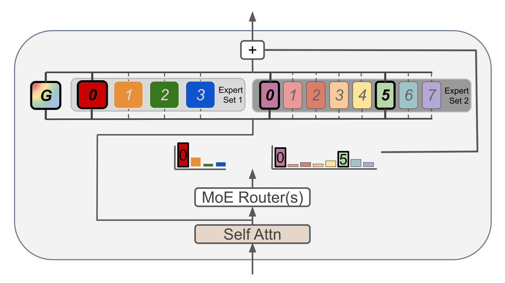
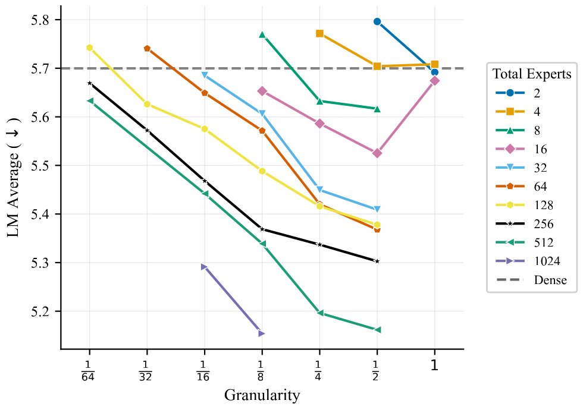
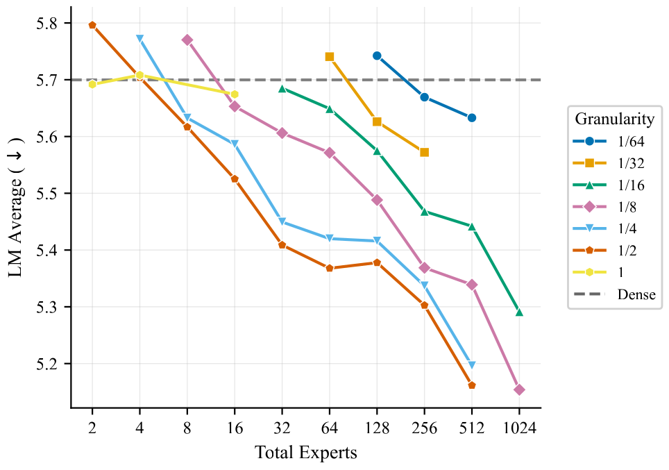
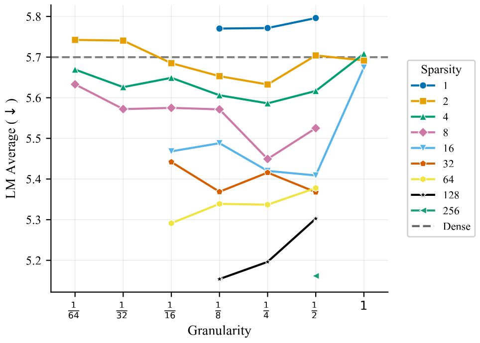
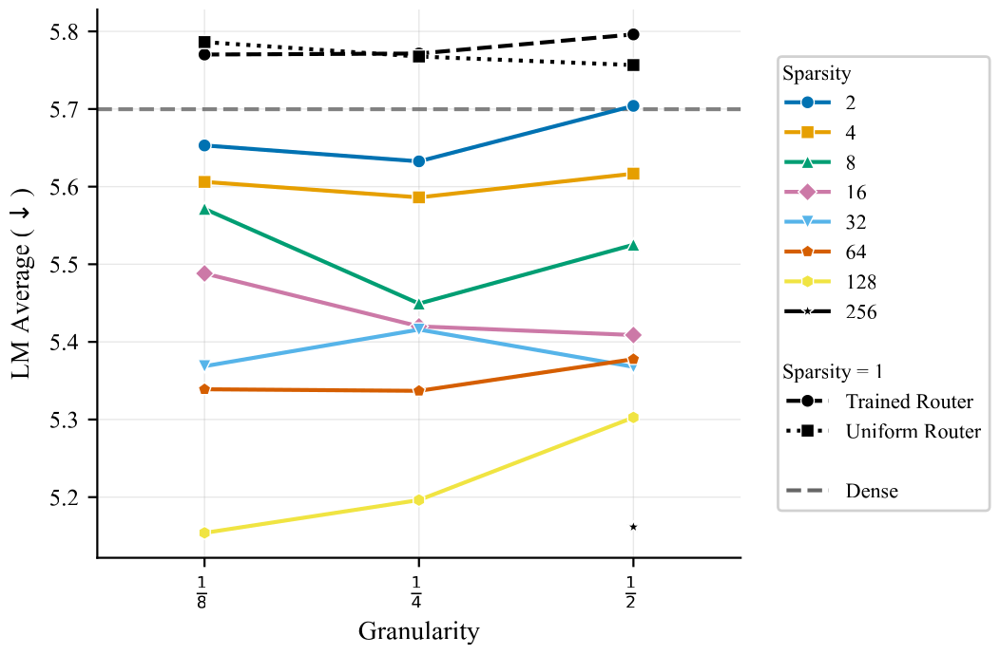
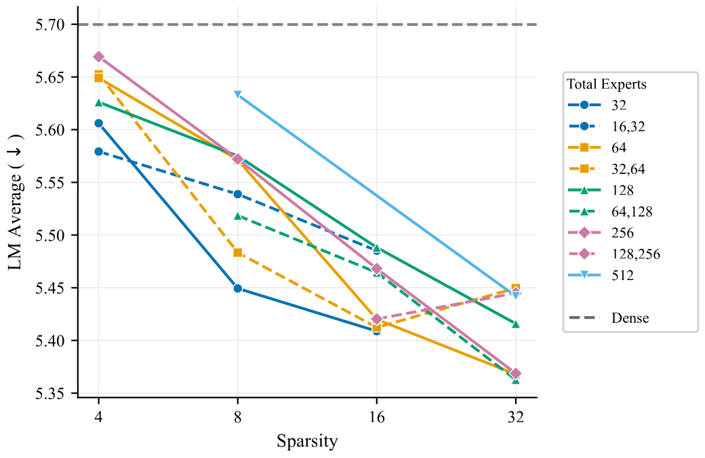
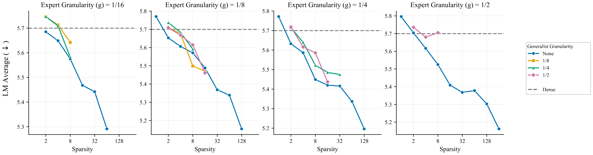
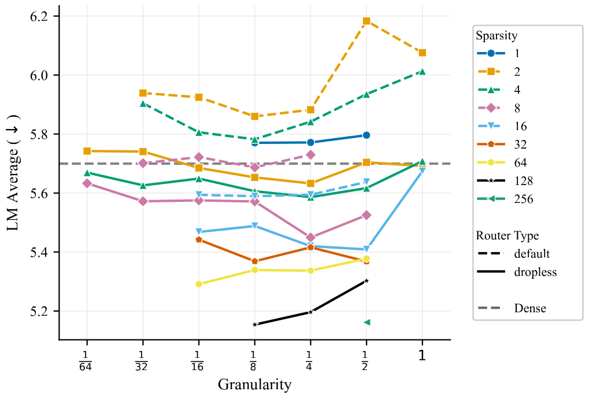
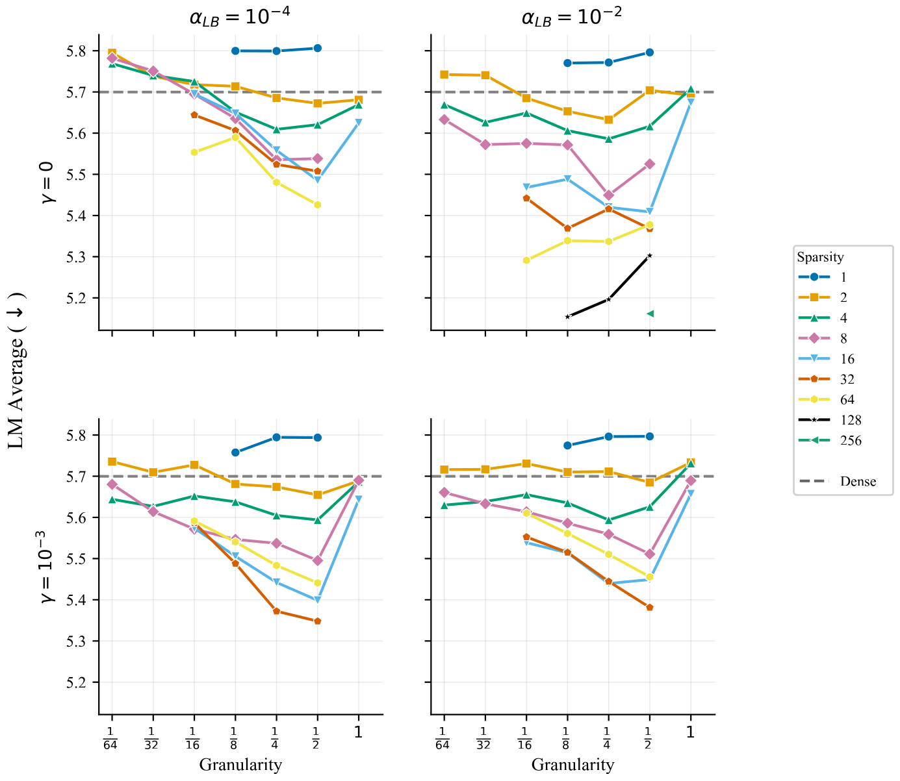
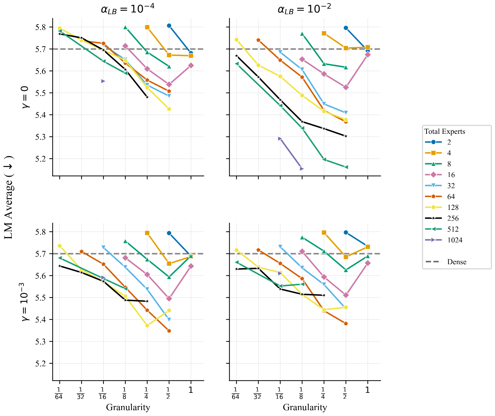

Slicing and Dicing：配置最优的专家混合 (MoE)
1 · 背景与核心问题
专家混合（Mixture of Experts, MoE）通过一个可学习的路由器，在每个 token 上只激活全部专家中的一小部分，从而把"模型容量"和"每步计算量"解耦——这是当今大模型（DeepSeek、Mixtral 等）实现高效扩展的核心手段。
问题在于：MoE 引入了一大批相互纠缠的设计旋钮——总专家数、专家粒度、是否使用共享专家、是否异构、用哪种负载均衡、是否丢弃 token……以往的研究几乎都是一次只动一两个旋钮、且范围很窄。于是一个根本问题悬而未决：
本文给出的答案：在固定计算预算下，作者首次把专家粒度与总专家数彻底解耦来扫描，发现绝大多数旋钮其实可以独立设置，设计空间远比想象的简单。三大贡献：
- 解耦专家数量与粒度：2000+ 实验（10M–6.6B 总参数）证明，即便激活/总专家参数比高达 128，性能仍随总 MoE 参数单调提升。
- 灵活性几乎无益：异构专家池与"共享通才专家"都不能超过一个配置良好的同构 MoE，共享专家甚至持续有害。
- 简化路由设计：负载均衡在合理范围内对质量很鲁棒；唯一稳定的小增益来自 dropless（无丢弃）路由。
2 · MoE 设计空间与定义

2.1 关键量：粒度、稀疏度、FLOP-match
专家粒度 (granularity) $g$ 定义为专家 FFN 的中间维度相对于稠密 FFN 中间维度的比值：
$g=1$ 表示专家与稠密 FFN 等大；$g=\tfrac14$ 表示专家只有稠密 FFN 中间维度的四分之一（即"细粒度"专家）。$g$ 越小，单个专家越小。
FLOP-match（计算对齐）：为了公平比较，所有配置在每步上激活相同的 FFN 参数量。做法是令激活专家数 $k$ 满足：
也就是说，专家越小（$g$ 越小），就同时激活越多个专家来补足激活参数——激活参数恒等于一个稠密模型，因此每步 FLOPs 完全可比。
激活稀疏度 (sparsity) $s$ 衡量总 FFN 参数超过激活 FFN 参数的倍数：
其中 $n$ 是总专家数。$s$ 越大，"额外的、未激活的"专家参数越多。它等价于一个内存预算：增大 $s$ 几乎不增加计算，只增加显存。理解全文的关键是：在固定 $s$（固定总参数/显存）下，可以用更多但更小的专家，或更少但更大的专家来达成同一个 $s$——这正是本文要 trade off 的核心维度。
2.2 路由与负载均衡机制
最常见的路由是 token choice：每个 token 选亲和度最高的 $k$ 个专家。但路由器天然倾向只用少数专家，因此需要负载均衡。本文比较了三类机制：
(1) 负载均衡辅助损失，以权重 $\alpha$ 加到主损失上：
其中 $f_i$ 是被路由到专家 $E_i$ 的 token 比例，$P_i$ 是该专家的总路由概率，$N_E$ 是专家数。该损失惩罚"过度依赖某个专家"。难点在 $\alpha$：太小则无效，太大则压制语言建模目标。
(2) 无损失（loss-free）负载均衡：DeepSeek 提出，给每个专家加一个偏置项，每步以步长 $\gamma$ 朝更均衡的方向微调，避开了调 $\alpha$ 的麻烦，但引入了新的归纳偏置（$\gamma$ 需要调）。
(3) Dropless（无丢弃）路由：当某专家收到的 token 超过其"容量"时，传统做法是丢弃溢出 token（或设 capacity factor=2 留冗余，但浪费一半容量）。Dropless 用块稀疏（block-sparse）矩阵运算保证没有任何 token 被丢弃。
此外还有 Zoph 等提出的 Router Z-loss，用于缓解大模型路由训练的不稳定（在预备实验中考察）：
3 · 实验设置
模型架构参考 Muennighoff 等 (2025)，激活参数从约 10M 到 300M（架构记为 10M/20M/.../300M），总参数从 10M 到 6.6B。所有配置在每步上对齐激活 FFN 参数，再用激活稀疏度 $s$ 对比总参数。
- 扫描范围：粒度 $g\in\{1,\tfrac12,\tfrac14,\tfrac18,\tfrac1{16},\tfrac1{32},\tfrac1{64}\}$，总专家数 $n\in\{2,4,...,1024\}$，由此 $s\in\{2,4,...,128\}$。
- 训练数据：Muennighoff 等开源的混合语料（网页 DCLM、代码 StarCoder、数学 OpenWebMath、百科 Wikipedia 等）；token-to-激活参数比约 20（遵循 Chinchilla 配方）。
- 评测指标：在多域留出验证集上的宏平均交叉熵损失（越低越好，下文图中 ↓），覆盖 Paloma（C4、Pile、WikiText-103、Dolma 6 域、M2D2、ICE）；下游任务含 BoolQ、HellaSwag、MMLU。5 个随机种子下语言建模损失的标准差近乎为 0，故曲线高度可信。
4 · 核心发现一：把"未激活参数"堆满，性能单调变好
这是全文最重要的结论。在 FLOP-match 下，无论通过把专家做大（固定 n，增大 g）还是增加专家个数（固定 g，增大 n），只要总参数变多，性能就持续提升——而且在作者观察的范围内看不到拐点，即"再多也不会变差"。




5 · 核心发现二：最优专家尺寸几乎只取决于"激活参数量"
把 Figure 2c 的最优点连起来看，一个非常实用的规律浮现：最优专家粒度对总参数几乎不敏感，只由激活参数规模决定。具体地：
| 激活参数规模 | 最优专家粒度 $g$ | 随 $s$ 增大的变化 |
|---|---|---|
| 50M | 约 $[\tfrac14,\tfrac12]$ | $s\ge 32$ 时移向 $\tfrac12$ |
| 110M | 约 $[\tfrac18,\tfrac14]$ | 大 $s$ 时移向 $\tfrac14$ |
| 300M | $\le \tfrac18$ | 基本稳定 |
含义：模型越大（激活参数越多），最优专家应当越细；而一旦固定了激活规模，再怎么加显存（增大 $s$），都应该靠多堆专家个数来实现，专家本身的尺寸近乎是个常数。这把"超参搜索"压缩成了一条几乎一维的规则。
6 · 核心发现三：异构专家与共享专家——灵活性几乎无益
6.1 异构专家：只是在同构配置之间插值
作者在一层里放两个专家池 $(n_1,n_2)$，平分激活与总参数，尝试 $(g_1,g_2)\in\{(\tfrac12,\tfrac14),(\tfrac14,\tfrac18),(\tfrac18,\tfrac1{16})\}$ 等组合。结果异构配置落在两个最接近的同构配置之间，没有任何"1+1>2"的协同。

6.2 共享专家（generalist）：持续轻微有害
"共享专家/通才"是对所有输入都激活的专家（DeepSeek 等架构的标配）。作者在大量配置上加入粒度 $\tfrac12/\tfrac14/\tfrac18$ 的通才，结论是：加任何通才都只会得到相当或更差的性能。原因之一是通才会占用宝贵的激活参数预算，挤掉真正起作用的路由专家。

7 · 核心发现四：路由消融——只有 dropless 稳定有效
7.1 Dropless 路由：小而稳定的增益

7.2 负载均衡：合理区间内影响很小，但极端值会坏事
作者扫了负载均衡损失权重 $\alpha_{LB}\in\{10^{-4},10^{-2}\}$ 与无损失偏置 $\gamma\in\{0,10^{-3}\}$。结论：大多数设置在 $n\le 128$ 时表现相当；最差的是"低权重 $\alpha_{LB}{=}10^{-4}$ 且 $\gamma{=}0$"（均衡力度不足）。值得警惕的是：在大 $n$（$\ge 512$）时，无损失偏置 $\gamma{=}10^{-3}$ 会损害性能——此时按 $\gamma$ 固定步长调偏置太粗，需要随 $n$ 调小。


8 · 深度分析与对比
与 DeepSeek 配方的对比：DeepSeek 把"细粒度专家 + 共享专家 + 改进路由"打包成一套强配方，但其方法把专家粒度与专家数绑定。本文的严格解耦网格搜索给出不同结论：推荐更粗的专家（约 $g=\tfrac14$），且共享专家无益。Muennighoff 等 (2025) 的单尺度消融也独立验证了"共享专家有害"。
与"固定最优值"主张的对比：Zhao 等 (2025) 认为共享专家必不可少、且存在一个固定的最优激活专家数（约 7）。本文用跨尺度数据反驳：这些"最优值"是随尺度变化的，并非固定常数；把它们当常数很可能是对特定 regime 过拟合的产物（高自由度拟合的 scaling law 往往外推不可靠）。
9 · 局限性与展望
- 规模上限：最大 6.6B 总参数、300M 激活参数，仍远小于前沿 MoE LLM（百亿~万亿级）。"看不到拐点"是否在更大规模依旧成立有待验证——作者也承认可能存在一个临界点，只是在本文范围内未观测到。
- Chinchilla 训练比例：所有模型按 token/激活参数 ≈ 20 训练；在严重欠训/过训（如 LLM 常用的远超 20×）下，最优粒度规律是否平移未知。
- 异构空间被强约束：因组合爆炸，异构只测了"两池、各占一半"的窄设置，更自由的异构拓扑未必同样"只插值"。
- 指标以交叉熵为主：语言建模损失方差近零、结论稳健，但下游任务存在更大方差，端到端能力的结论需谨慎。
10 · 核心总结：一个被简化的实践配方
作者给出的极简 MoE 优化配方（按优先级）：
- 根据激活参数规模设定专家尺寸（粒度 $g$）——在本文设置中约取 $g\approx\tfrac14$，模型越大可越细；至少激活 2 个专家（别用 Top-1 / $g=1$）。
- 把总专家数 $n$ 加到内存预算的上限——在固定算力下，多堆未激活专家几乎稳赚不赔。
- 只需最小化地扫负载均衡——在合理区间内影响很小；启用 dropless 路由拿稳定小增益；大 $n$ 时记得把无损失偏置 $\gamma$ 调小。
- 不要异构、不要共享专家——它们不带来增益，共享专家还会持续轻微有害。
一句话：专注于"专家数量 × 专家粒度"这两个旋钮，其他都可以放心简化。
资源链接
- 论文（arXiv）：arXiv:2605.11689 — Slicing and Dicing: Configuring Optimal Mixtures of Experts
- PDF：https://arxiv.org/pdf/2605.11689
- 代码与数据：github.com/hadasah/slicing_and_dicing
- 训练数据/架构来源：Muennighoff et al. (2025)；训练比例遵循 Chinchilla (Hoffmann et al., 2022)。
本报告为中文深度解读，图片均取自论文官方 arXiv 源文件（同构 MoE 50M 激活规模主图），仅作学术解读用途。